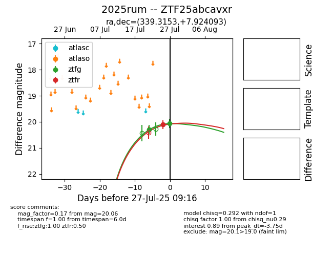

Target 2025rum at 2025-07-27 09:16, see:
FINK: fink-portal.org/2025rum
Lasair: lasair-ztf.lsst.ac.uk/objects/2025rum
ALeRCE: alerce.online/object/2025rum
TNS: wis-tns.org/object/2025rum
YSE: ziggy.ucolick.org/yse/transient_detail/2025rum
alt names
ZTF25abcavxr (ztf,fink)
2025rum (tns,yse)
coordinates:
equatorial (ra, dec) = (339.3153,+7.92409)
galactic (l, b) = (75.2950,-42.20804)
photometry
last ztfg=20.06, ztfr=20.11
2 ztfg, 1 ztfr detections
